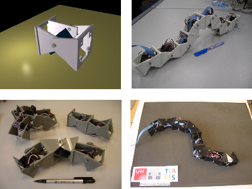
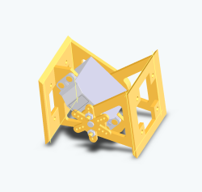
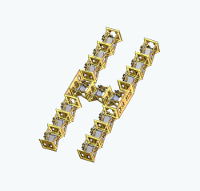
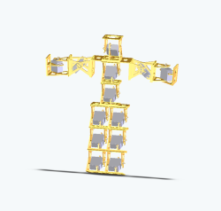

This work is licensed
under a Creative
Commons Attribution-ShareAlike 2.5 Spain License.
This work is licensed
under a Creative
Commons Attribution-ShareAlike 2.5 Spain License.
|
"Modular Robotics and Locomotion”. TAMS group. FB Informatik. Uni Hamburg. March 2006 |
|
 |
Title:: “Modular Robotics and Locomotion”
Duration: 90 minutes
Event: Open seminar for students.
Place:: TAMS group. FB Informatik. Uni Hamburg. .
Date: May-15th- 2006
Talker: Juan González Gómez (Escuela Politécnica Superior, UAM)
The main goal of the modular robotics is to build robots from simple modules and to study its properties. Two of the most advanced modular robots in the world are Polybot and M-TRAN, from PARC and AIST groups respectively. Both are self-reconfigurable robots, that means that they can automatically change their shapes.
The Y1 modules have been designed to start researching in modular robotics. They are a very cheap and easy-to-build modules. Different robot configurations can be created by linking these modules in different ways and its locomotion capabilities can be studied.
Three different minimal configurations have been built. These are the robots with the minimal number of modules that can move in 1D and 2D. Their locomotion capabilities are analized. But, instead of presenting the information to the students, some questions are ask, to let them think about it, and to try to find a solution. After that, the final solution is presented.
More complex robots can be created by joining the Y1 modules in different ways: worm-like robots and snake-like robots. The former are composed of Y1 modules in the same orientation and moving around the pitch axis. These robots only can move in one dimension. The latter comprises modules that rotates around the pitch and yaw axes respectively. They can perform different locomotion gaits, like turning, rolling, rotating, lateral shifting and sinusoidal moving.
In the end of the presentation, the design of the new modules GZ2 was shown. This modules are the result of the cooperation between Dr. Houxiang Zhang, from the TAMS group and Juan Gonzalez-Gomez, from the Universidad Autonoma de Madrid. Currently, the prototype is being built at the Robotics Institute of BeiHang University:
|
 |
 |
 |
|
Presentation slides |
|
modular-robotics-tams-may-2006.pdf (4.2 MB) |
Slides in PDF format |
|
modular-robotics-tams-may-2006.odp (9.6 MB) |
Presentation sources for OpenOffice 2.0 |
|
|
Paper: “Motion of Minimal Configurations of a Modular Robot: Sinusoidal, Lateral Rolling and Lateral Shift”
Paper: “Locomotion of a Modular Worm-like Robot using a FPGA-based embeded MicroBlaze Soft-processor”
Cube Revolutions worm-like robot (in Spanish)
Y1 modules (in Spanish)
Locomotion capabilities of the pitch-yaw connecting robot:
Minimal configurations in 1D and 2D
Pitch-connecting modular robot, composed of 8 linked modules.
31/May/2006: Web page published